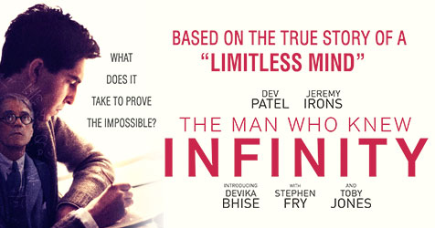

Gifted


Frank, a single man raising his child prodigy niece Mary, is drawn into a custody battle with his mother.
Director: Marc Webb
Writer: Tom Flynn
Stars: Chris Evans ,
Mckenna Grace ,
Lindsay Duncan |
See full cast & crew
Genres: Drama
Taglines: How do you create an ordinary life for an extraordinary girl
Story line
Frank Adler (Chris Evans) is a single man raising a child prodigy - his spirited young niece Mary (Mckenna Grace) in a coastal town in Florida. Frank's plans for a normal school life for Mary are foiled when the seven-year-old's mathematical abilities come to the attention of Frank's formidable mother Evelyn (Lindsay Duncan) whose plans for her granddaughter threaten to separate Frank and Mary. Octavia Spencer plays Roberta, Frank and Mary's landlady and best friend. Jenny Slate is Mary's teacher, Bonnie, a young woman whose concern for her student develops into a connection with her uncle as well. Written by Fox Searchlight Pictures
Plot Summary | Plot Synopsis
Details
Official Sites:Official site [Japan]
Country: USA
Language: English
Release Date: 1 June 2017 (Russia) See more
Filming Locations: Savannah, Georgia, USA See more
The Man Who Knew Infinity

The story of the life and academic career of the pioneer Indian mathematician, Srinivasa Ramanujan, and his friendship with his mentor, Professor G.H. Hardy.
Director: Matt Brown (as Matthew Brown)
Writers: Matt Brown (screenplay), Matt Brown | 1 more credit
Stars: Dev Patel , Jeremy Irons , Malcolm Sinclair | See full cast & crew
Genres: Biography | Drama
Taglines: What does it take to prove the impossible? See more
Storyline
In the 1910s, Srinivasa Ramanujan is a man of boundless intelligence that even the abject poverty of his home in Madras, India, cannot crush. Eventually, his stellar intelligence in mathematics and his boundless confidence in both attract the attention of the noted British mathematics professor, G.H. Hardy, who invites him to further develop his computations at Trinity College at Cambridge. Forced to leave his young wife, Janaki, behind, Ramanujan finds himself in a land where both his largely intuitive mathematical theories and his cultural values run headlong into both the stringent academic requirements of his school and mentor and the prejudiced realities of a Britain heading into World War One. Facing this with a family back home determined to keep him from his wife and his own declining health, Ramanujan joins with Hardy in a mutual struggle that would define Ramanujan as one of India's greatest modern scholars who broke more than one barrier in his worlds. Written by Kenneth Chisholm (kchishol@rogers.com)
Plot Summary | Add Synopsis
Details
Official Sites: Official Facebook | Official site [Japan] |See more
Country: UK | USA
Language: English | Tamil | Sanskrit
Release Date: 8 April 2016 (UK) See more
Filming Locations: The Charterhouse, Charterhouse Square ,London , England , UK See more
Before I Fall
February 12 is just another day in Sam's charmed life, until it turns out to be her last. Stuck reliving her last day over and over, Sam untangles the mystery around her death and discovers everything she's losing.
Director: Ry Russo-Young
Writers: Maria Maggenti (screenplay by) , Lauren Oliver (based on the novel by)
Stars: Zoey Deutch , Halston Sage , Cynthy Wu | See full cast & crew
Genres: Drama | Mystery
Taglines: What if today was the only day of the rest of your life? See more
Storyline
What if you had only one day to change absolutely everything? Samantha Kingston has it all: the perfect friends, the perfect guy, and a seemingly perfect future. Then, everything changes. After one fateful night, Sam wakes up with no future at all. Trapped reliving the same day over and over she begins to question just how perfect her life really was. And as she begins to untangle the mystery of a life suddenly derailed, she must also unwind the secrets of the people closest to her, and discover the power of a single day to make a difference, not just in her own life, but in the lives of those around her - before she runs out of time for good.
Plot Summary | Plot Synopsis
Details
Official Sites: Official Facebook | Official site
Country: USA
Language: English
Release Date: 3 March 2017 (USA) See more
Filming Locations: British Columbia, Canada See more
Need For Speed

Fresh from prison, a street racer who was framed by a wealthy business associate joins a cross country race with revenge in mind. His ex-partner, learning of the plan, places a massive bounty on his head as the race begins.
Director: Scott Waugh
Writers: George Gatins (screenplay), George Gatins (story) | 1 more credit
Stars: Aaron Paul , Dominic Cooper , Imogen Poots | See full cast & crew
Genres: Action | Crime | Thriller
Storyline
Framed by an ex-partner for a murder he did not commit, Tobey Marshall, a financially struggling custom-car builder and street-racer, spends two years in jail thinking about one moment. Fresh out of prison he reacquires the fastest car his workshop ever built and sold, and seeks to enter a secretive and extremely high-stakes race known as The DeLeon. His purpose; redemption, recognition from the world of racing and to solve his problems. Yet all this fades in comparison to his driving reason. Revenge. Above all, revenge. This is a story about love, redemption, revenge and motor oil all swirled together Written by Chase Game Reviews
Plot Summary | Plot Synopsis
Details
Official Sites: Official site
Country: USA | India
Language: English
Release Date: 13 March 2014 (Russia) See more
Filming Locations: San Francisco, California, USA See more